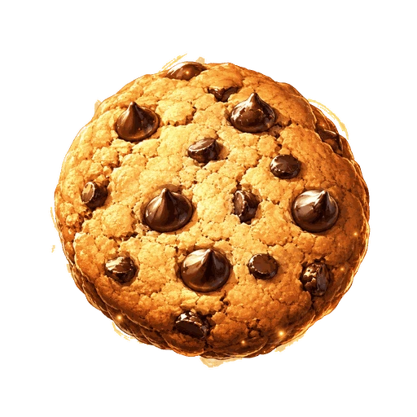
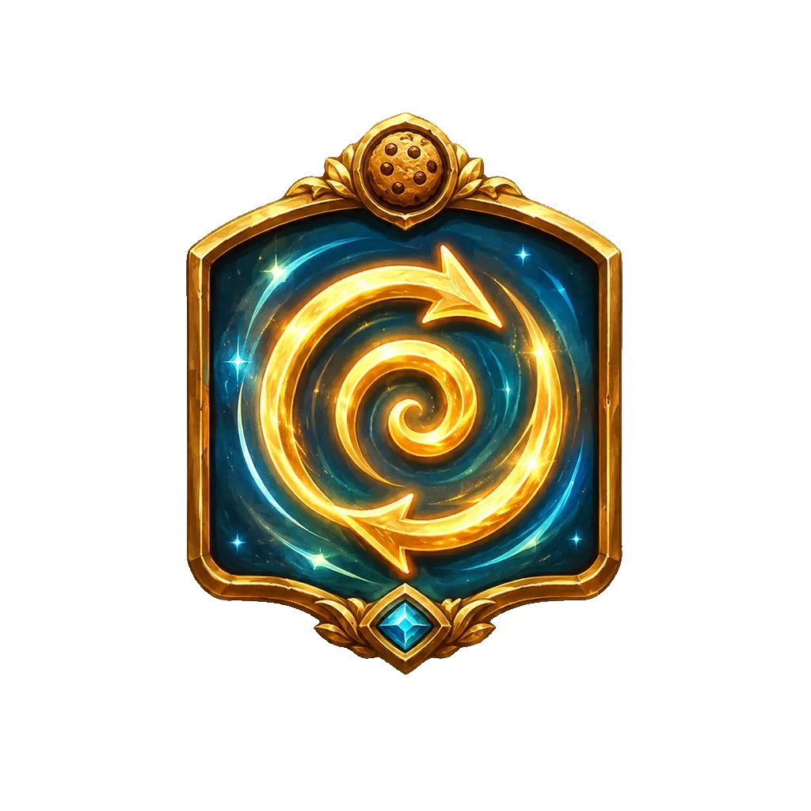
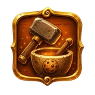
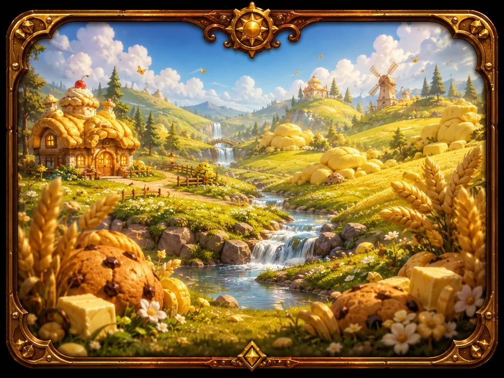

このゲームの特徴

タップ＆自動生産クッキーをタップして手焼きし、「強い指」「おばあちゃん」「オーブン」「工場」などの設備を買って毎秒の自動生産を増やします。設備は買うほど値上がりし、次に何へ投資するか考える楽しさがあります。
 金のクッキー
金のクッキー
ときどき現れる金のクッキーをタップすると、まとまったクッキーを即時獲得したり、一定時間すべての生産がブーストされたりします。狙って取りに行くほど伸びます。
 モンスターとノルマ
モンスターとノルマ
クッキーモンスターを連打で撃破すると、好きな報酬を選んで強化できます。モンスターには「出現ノルマ」があり、それを維持し続けられるかがこのゲーム独自の駆け引きです。

周回・転生・スキルツリーある程度進んだら転生（周回）してスキルポイントを獲得し、巨大なスキルツリーを育てます。「いつ周回するか」の判断が伸びを左右します。

工房・装備・料理モンスターが落とす素材で、周回をまたいで残る装備を作ったり、時限バフの料理を焼いたりできます。集めた素材の使い道を選ぶ育成要素です。

ステージ探索草原から火山、氷河、砂丘、銀河、そしてその先の深層領域へ。ステージごとに出現するモンスターや落とす素材が変わり、探索する楽しさがあります。
まずはこの流れで
- 画面中央の大きなクッキーをタップしてクッキーを集める。
- 「強化」タブでいちばん安い設備（おばあちゃんなど）を買い、毎秒の自動生産を増やす。
- クッキーが貯まったら「研究」で設備を底上げし、金のクッキーが出たら必ずタップ。
- クッキーモンスターが出たら連打で撃破して報酬を選ぶ。
- 設備が一通り揃って伸びが鈍ったら転生（周回）してスキルを取り、さらに強くなって再挑戦。
→ 詳しい遊び方はこちら ／ → 初心者向けの攻略・周回の考え方
もっと知る
よくある質問
料金はかかりますか？
基本プレイ無料です。会員登録は不要で、ブラウザだけで遊べます。周回スタート時に広告が表示されることがあります。
セーブデータはどこに保存されますか？
お使いのブラウザのローカルストレージに自動保存されます。同じ端末・同じブラウザで開けば続きから遊べます。設定画面から Google アカウントでログインすると、セーブデータをクラウドにも自動保存し、別の端末でも同じアカウントで続きから遊べます（任意）。詳しくはプライバシーポリシーをご覧ください。
放置していても進みますか？
はい。ゲームを閉じている間も一定時間分のクッキーが自動で生産され、次に開いたときにまとめて受け取れます（時間の上限はスキルで延長・撤廃できます）。
スマートフォンでも遊べますか？
はい。スマートフォン・タブレット・パソコンのブラウザに対応しています。ホーム画面に追加すればアプリのように起動できます。